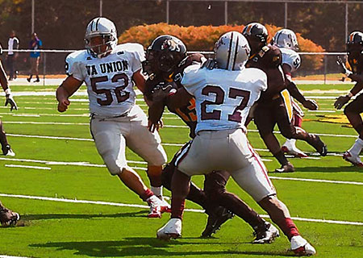

Ronald Prioleau, No. 52, Virgina Union
Ronald Prioleau is a former college student-athlete and aspiring sports analyst.
Ronald graduated from the University of Miami in December 2017 with a Master's in Journalism. Prior to his time in Miami, he completed a Master's in Recreation and Sports Science with a concentration in Coaching Education from Ohio University and a Bachelor's in Sport Management from Wingate University.
Passionate about sports since his youth, Ronald has a vast array of experience in the press box and on the field, ranging from hosting his own sports talk show to working with athletics programs at the university level.
To listen and see Ronald's audio/visual work, please visit his web site in a desktop setting.